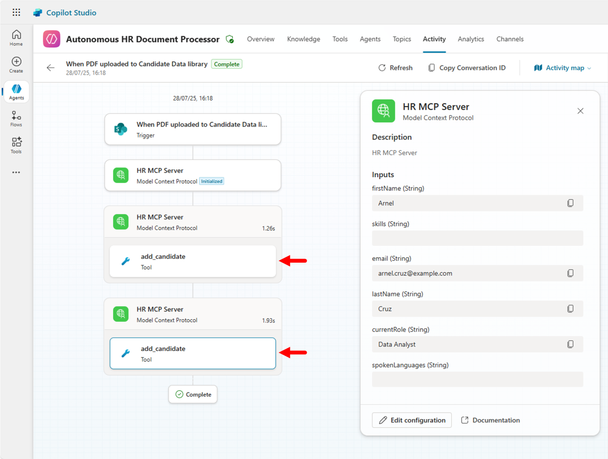

ラボ MCS7 - Autonomous エージェントの作成
このラボでは、Microsoft Copilot Studio を使用して Autonomous エージェントを作成する方法を学びます。ここで作成するエージェントは、SharePoint にアップロードされた PDF ファイルから候補者データを自動で処理します。エージェントは SharePoint のドキュメント ライブラリを監視し、新しい PDF のアップロードを検知すると AI で候補者情報を抽出し、前のラボ MCS6 で構築した MCP サーバーを使用して候補者レコードを自動作成します。このラボでは、ドキュメント処理とデータ入力タスクを自動化することで HR ワークフローを効率化できることを示します。
Microsoft Copilot Studio で エージェント を構築したい場合は、次の ラボ を実施してください
Note
このラボは前回の ラボ MCS6 を基盤としています。前回構成した MCP サーバーをそのまま利用できます。
このラボで学ぶ内容:
- Microsoft Copilot Studio で Autonomous エージェントを作成する方法
- SharePoint ドキュメント ライブラリのトリガーを構成する方法
- AI で PDF ドキュメントを処理し構造化データを抽出する方法
- Autonomous エージェントを MCP サーバーと統合する方法
Exercise 1: SharePoint 環境のセットアップ
この演習では、Autonomous エージェントのトリガー ポイントとして機能する SharePoint ドキュメント ライブラリを準備します。エージェントはこのライブラリを監視し、候補者データを含む新しい PDF ファイルを自動的に処理します。
Step 1: SharePoint ドキュメント ライブラリの作成
Autonomous エージェントを作成する前に、HR 担当者が候補者の PDF ファイルをアップロードできる SharePoint ドキュメント ライブラリをセットアップします。
Microsoft 365 テナント内の任意の SharePoint サイト（新規サイトの作成も可）に移動し、次の手順でドキュメント ライブラリを作成します。
- サイトのコンテンツ に移動し、新規 → ドキュメント ライブラリ を選択
- テンプレートとして 空のライブラリ を選択
- ライブラリ名:
Candidates Data - 説明:
Document library for candidate PDF data files - 作成 を選択

作成後、エージェントがアクセスできるようにライブラリの権限を構成します。
- 設定 (歯車アイコン) → ライブラリの設定 を選択
- アクセス許可と管理 で このドキュメント ライブラリのアクセス許可 を選択
- Microsoft Copilot Studio で使用するアカウントに 投稿 (Contribute) 以上の権限があることを確認
Step 2: サンプル PDF ファイルの準備
テスト用に resumes.zip をダウンロードして解凍します。
ダウンロードしたファイルには以下のような仮想候補者情報が含まれています。
- 氏名
- メール アドレス
- 現在の職種/ポジション
- スキルと専門分野
- 使用言語
任意のワープロ ソフトで簡単な PDF を作成して保存するか、既存の履歴書/CV を使用することもできます。AI が正しく情報を抽出できるよう、テキストが読み取れる (スキャン画像でない) 形式にしてください。
Step 3: 前提条件の確認
次の項目を完了していることを確認してください。
- ラボ MCS6: HR MCP サーバーが dev tunnel で実行・アクセス可能である
- SharePoint アクセス: ドキュメント ライブラリの作成と管理権限
- Power Platform 環境: 以前のラボと同じ環境へのアクセス
- サンプル PDF ファイル: 候補者データを含むテスト用 PDF が 2〜3 つ以上
また、ラボ MCS6 の HR MCP サーバーが稼働中でない場合は、次のコマンドで起動します。
dotnet run
dev tunnel がアクティブであることも確認します。
devtunnel host hr-mcp
本ラボの間、Autonomous エージェントが MCP サーバーと通信できるよう、両サービスを起動したままにしてください。
Exercise 2: Autonomous エージェントの作成
この演習では、SharePoint ドキュメント ライブラリを監視し新しい PDF を自動処理する Autonomous エージェントを Microsoft Copilot Studio で作成します。
Step 1: Autonomous エージェントの作成
ブラウザーを開き、対象 Microsoft 365 テナントの職場アカウントで https://copilotstudio.microsoft.com にアクセスします。
前ラボで作成した Copilot Dev Camp 環境を選択し、Copilot Studio ホーム ページ中央の Create an agent を選択して新しいエージェントを作成します。
以下の設定でエージェントを構成します。
- Name:
```text Autonomous HR Docs Processor
- **Description**:
```text
An autonomous AI agent that monitors SharePoint for new candidate PDF uploads and
automatically processes them to create candidate records via MCP server integration
-
Instructions:
```text You are an autonomous HR assistant that specializes in processing candidate data from PDF documents. When a new PDF file is uploaded to the SharePoint document library, you automatically: -
Extract candidate information from the PDF file content including name, email, skills, languages, and role
- Validate and structure the extracted data
- Create a new candidate record using the 'add_candidate' tool of the HR MCP server
- Provide confirmation of successful processing
- Send me an email with confirmation that the new candidate record was created and with a recap of candidate's data
Always ensure data accuracy and provide clear feedback about the processing results. Handle errors gracefully and provide informative messages when processing fails.
IMPORTANT: Do not wait for any user input. Work completely autonomously.
DO NOT invent or assume fake data about candidates. AVOID allucinations. You MUST ONLY process real and existing data.
**Publish** を選択してエージェントを公開します。
<cc-end-step lab="mcs7" exercise="2" step="1" />
### Step 2: エージェントの知能強化
エージェント作成後、生成 AI 推論とナレッジ統合により能力を強化します。
エージェントの **Knowledge** セクションで、HR ドキュメントや候補者処理ガイドラインなどのナレッジ ソースを追加することもできます。本ラボでは、エージェント標準の AI 機能と MCP サーバー統合に頼ります。
設定を変更した場合は **Save** を選択して確定します。
<cc-end-step lab="mcs7" exercise="2" step="2" />
### Step 3: MCP サーバー統合の追加
エージェントが候補者レコードを作成できるよう、HR MCP サーバー ツールへアクセスさせます。**Tools** セクションに移動し **+ Add a tool** を選択します。
1. **Model Context Protocol** グループを選択
2. ラボ MCS6 で構成した **HR MCP Server** を見つけて選択
3. **Add and configure** を選択し MCP サーバーツールを統合

これでエージェントは HR MCP サーバーの以下のツールにアクセスできます。
- `list_candidates`
- `search_candidates`
- `add_candidate`
- `update_candidate`
- `remove_candidate`
新しい PDF の処理では主に `add_candidate` ツールを使用します。
<cc-end-step lab="mcs7" exercise="2" step="3" />
### Step 4: Email Management MCP Server の追加
エージェントがメール送信できるよう **Email Management MCP Server** も追加します。**Tools** セクションで **+ Add a tool** を選択。
1. **Model Context Protocol** グループを選択
2. **Email Management MCP Server** を選択
3. **Add and configure** を選択して統合
これにより、現在のユーザーのメールボックスを管理する幅広いツールが利用可能となります。エージェントは主に `SendEmail` ツールで通知メールを送信します。
<cc-end-step lab="mcs7" exercise="2" step="4" />
## Exercise 3: SharePoint トリガーの構成
この演習では、SharePoint ドキュメント ライブラリに新しい PDF がアップロードされた際にエージェントが自動トリガーされるよう構成します。
### Step 1: SharePoint トリガーの追加
エージェントで 1️⃣ **Overview** セクションに移動し、2️⃣ **Triggers** パネルをスクロールして 3️⃣ **+ Add trigger** を選択します。

**Add trigger** ダイアログで SharePoint コネクター オプションから **When a file is created (properties only)** を選択し、**Next** を選択してトリガーを構成します。

次のステップではトリガー名を入力し、対象アプリへのアクセス許可を構成します。今回のアプリは以下のとおりです。
- Microsoft Copilot Studio
- SharePoint
以下のように構成します。
- **Trigger name**: `When PDF uploaded to Candidate Data library`

**Next** を選択し、追加設定を次のように構成します。
- **Site Address**: 対象 SharePoint サイトを選択または URL を入力
- **Library Name**: `Candidate Data` を選択
- **Folder**: 空白のまま (ライブラリ全体を監視)
- **Limit columns by View (Optional)**: All Documents
- **Additional instructions to the agent when it's invoked by this trigger**: Use content from `Body` and read content of the PDF file.

**Create trigger** を選択し、エージェントに SharePoint 監視トリガーを追加します。完了まで少し時間がかかります。準備が整うとテストを促すダイアログが表示されます。

**Close** を選択し、エージェントの **Overview** セクションに戻ります。
<cc-end-step lab="mcs7" exercise="3" step="1" />
### Step 2: トリガーのテスト
**Triggers** の一覧に新しいトリガーが表示され、**…** の横にあるフラスコアイコンを選択してテストできます。

フラスコを選択すると、SharePoint の対象ライブラリへのファイルアップロードを待機するダイアログが表示されます。

対象ライブラリにファイルがアップロードされるとダイアログが更新され、**Start testing** コマンドが選択可能になります。複数ファイルがある場合はテストに使用するファイルを選択できます。
事前にダウンロードした履歴書 PDF を 1 つアップロードして、エージェントが処理するのを待ちます。
!!! note
エージェントが新しいファイルを認識するまで最大 1 分かかる場合があります。テスト ダイアログが準備完了になるまでお待ちください。

テストが開始すると、**Test your agent** サイド パネルでエージェントと対話できます。最初に HR MCP Server へ接続する必要があります。エージェントのメッセージ内の **Open connection manager** を選択し、**Connect** で HR MCP Server に接続したら **Retry** を選択します。
PDF 履歴書の候補者が HR MCP Server に追加された旨の確認メッセージが表示されるはずです。

必要であれば `List all the candidates` と入力して新しい候補者がリストにあることを確認してください。これでエージェントは準備完了です。**Publish** してファイルを自律的に処理させましょう。
公開時、次のような警告が表示される場合があります。

1. **Full access for editors**: Editor 権限を持つユーザーは、フローやトリガーで使用される埋め込み接続にフル アクセスできます。
1. **Your agent includes triggers that use the author's credentials**: これらのトリガーがデータを共有する場合、他ユーザーは元の編集者の資格情報を使用して情報にアクセスまたはタスクを実行できます。
エージェントを公開したら、新しい PDF 履歴書をアップロードして動作を確認します。SharePoint ライブラリにファイルをアップロード後、エージェントの **Activity** セクションで `Automated` 呼び出しを確認できます。

<cc-end-step lab="mcs7" exercise="3" step="2" />
## Exercise 4: Autonomous エージェントの内部
この演習では、Autonomous エージェントがどのように動作するか、舞台裏を理解します。
### Step 1: トリガーの舞台裏
トリガーを作成・テストした後は、Autonomous エージェントの動作を詳細に理解したい場合があります。トリガー横の **…** を選択し、**Edit in Power Automate** を選択します。

Power Automate では、エージェント トリガーの裏で動くフローが表示されます。

フローは非常にシンプルで、SharePoint コネクターの **When a file is created (properties only)** アクションと **Sends a prompt to the specified copilot for processing** アクションのみです。つまり、Autonomous エージェントのトリガーは、エージェントにプロンプトを送信する Power Automate フローです。そのため、ほぼすべての Power Automate フローのトリガーを Copilot Studio のエージェント トリガーとして利用できます。
必要に応じてフローをカスタマイズし、エージェント呼び出し前に追加の処理を行うことも可能ですが、その場合は次のステップで説明するポイントに注意してください。
<cc-end-step lab="mcs7" exercise="4" step="1" />
### Step 2: 複数ファイルのアップロード処理
Autonomous エージェントのトリガーについて興味深い点は、SharePoint に複数ファイルをアップロードする、または複数のトリガー イベントが発生した場合でも、必ずしもファイル/イベントごとに Power Automate フローが起動されるわけではないことです。例えば短時間に複数ファイルをアップロードすると、1 つのフロー インスタンスが複数ファイルをまとめて処理します。フローは 1 つのエージェント インスタンスを呼び出し、エージェントがファイルを 1 件ずつ処理します。
複数ファイルを同時アップロードし、その後 Power Automate でフロー実行を、Copilot Studio でエージェント呼び出しを確認すると、この動作を検証できます。1 つのフローが複数ファイルを処理し、対応するエージェント インスタンスも 1 つだけ起動されます。
エージェントの **Activity** セクションで `Automated` インスタンスを選択すると、`Completed steps` が複数あることを確認できます。

インスタンスを選択すると、エージェントが複数ファイルを自動で処理し、それぞれに対して `add_candidate` ツールを呼び出したことがわかります。エージェントの指示で次のように指定しただけで、
```text
... When a new PDF file is uploaded to the SharePoint document library: ...
エージェントの自律的な知能がアップロードされたすべてのファイルをループし、同じロジックを適用します。AI の強力さを実感できます。

おめでとうございます！
ラボ MCS7 - Autonomous エージェントの作成を完了しました!
こちらから ラボ MCS8 に進み、Copilot Studio で Microsoft Azure AI Search を使用した RAG について学びましょう。